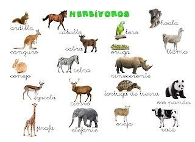

Los animales herbívoros son organismos consumidores primarios que basan su dieta principalmente en plantas, hierbas, hojas, frutos, raíces o semillas . Son cruciales para el equilibrio ecológico, actuando como dispersores de semillas y controlando la vegetación. Tienen dientes planos y fuertes (molares) para triturar fibras
